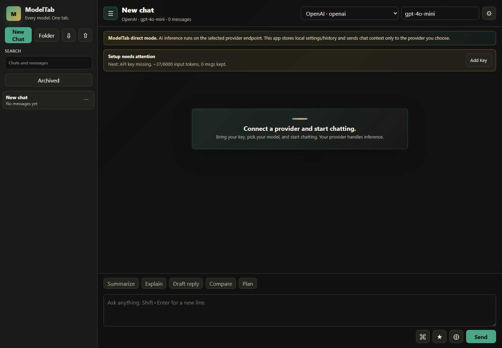
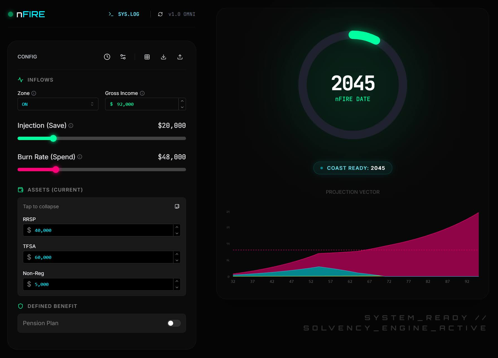

Primary Apps
The two projects worth routing most visitor attention to first.
Supporting Projects
A deliberately small supporting set. Public GitHub data fills these cards when available.
Loading projects...
The two projects worth routing most visitor attention to first.


A deliberately small supporting set. Public GitHub data fills these cards when available.
Loading projects...